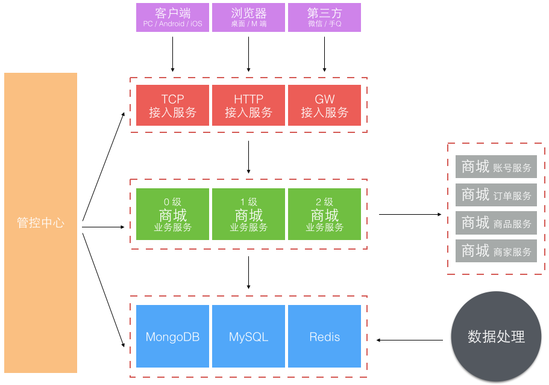
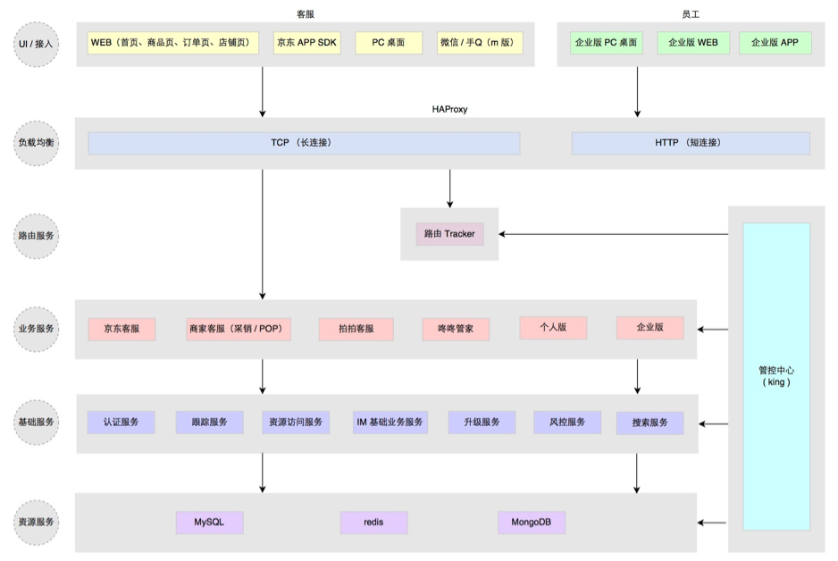
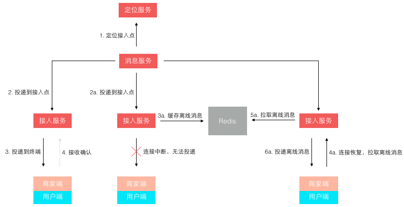
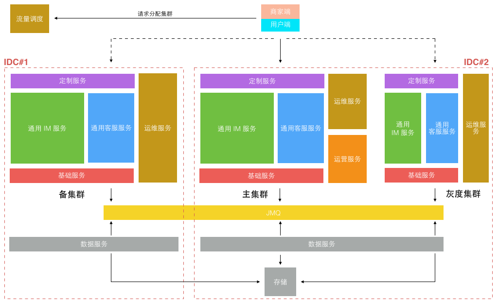
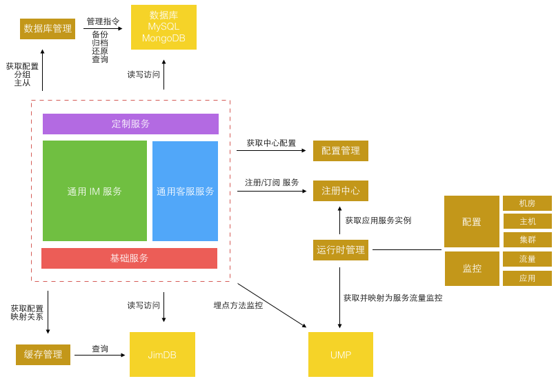
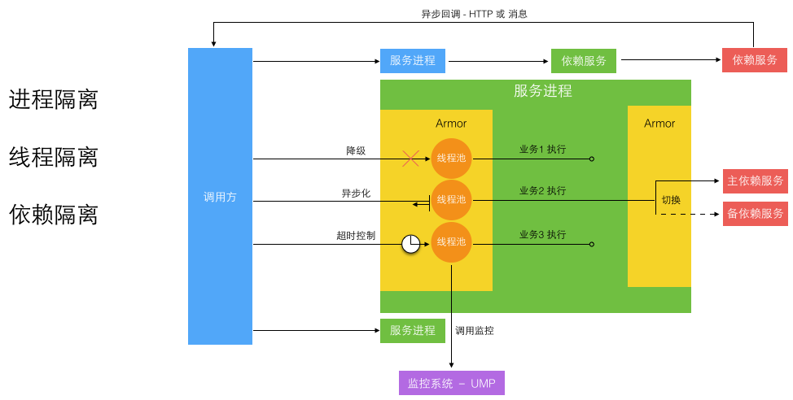
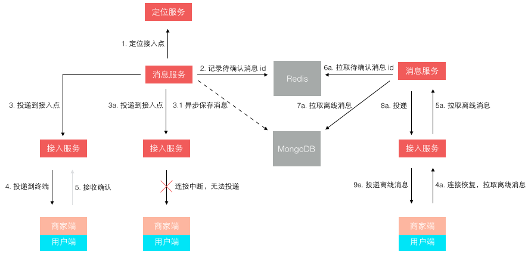

Architecture Scrap
Table of Contents
- 1 软件架构入门
- 2 微服务的理论模型和现实路径
- 3 京东咚咚架构演进
- 4 The Tumblr Architecture Yahoo Bought For A Cool Billion Dollars
- 5 Web service 是什么？
- 6 Scalability for Dummies
- 7 Introduction to Architecting Systems for Scale
- 8 Scalable System Design
- 9 Web Site Scalability
- 10 Design Web Site to be Highly Scalable
1 软件架构入门
1.1 分层架构
分层架构（layered architecture）是最常见（默认）的软件架构，也是事实上的标准架构。
这种架构将软件分成若干层，每一层都有清晰的分工， 不需要知道其他层的细节，层与层之间通过接口通信。 用户的请求将依次通过这四层的处理，不能跳过其中任何一层。虽然没有明确约定软件一定要分成多少层，但是四层的结构最常见：
| 表现层（presentation） | 用户界面，负责视觉元素和用户互动 |
|---|---|
| 业务层（business） | 实现业务逻辑 |
| 持久层（persistence） | 负责提供数据，SQL 语句在这一层 |
| 数据库（database） | 负责保存数据 |
有的软件在业务层和持久层之间加了一个服务层（service），提供不同业务逻辑需要的通用接口。
| 开发 | （优）结构简单，容易理解和开发。 |
|---|---|
| （优）团队可以分工负责不同的层，适合大多数软件公司的组织架构。 | |
| 测试 | （优）每一层都可以独立测试，其他层的接口通过模拟实现。 |
| 部署 | （缺）即使做小修改，往往需要整个软件重新部署，不容易做持续发布。 |
| （缺）软件升级时，可能需要整个服务暂停。 | |
| 扩展 | （缺）扩展性差，必须依次扩展每一层，而每一层内部是耦合的，扩展困难。 |
| （缺）一旦环境变化，需要代码调整或增加功能时，通常成本较大。 |
1.2 事件驱动架构
事件是状态发生变化时，软件发出的通知。事件驱动架构（event-driven architecture）就是通过事件进行通信的软件架构。它分成四个部分：
| 事件队列（event queue） | 接收事件的入口 |
|---|---|
| 分发器（event mediator） | 将事件分发到不同的业务逻辑单元 |
| 事件通道（event channel） | 分发器与处理器之间的联系渠道 |
| 事件处理器（event processor） | 实现业务逻辑，处理完成后会发出事件，触发下一步操作 |

对于简单的项目，事件队列、分发器和事件通道，可以合为一体，整个软件就分成事件代理和事件处理器两部分：

| 开发 | （缺）涉及异步编程（要考虑远程通信、失去响应等情况），开发相对复杂。 |
|---|---|
| （优）适用性广，各种类型的项目都可以用。 | |
| 测试 | （缺）分布式和异步特性导致较难测试。 |
| 部署 | （优）事件处理器可以独立地加载和卸载，容易部署。 |
| 性能 | （优）性能较好，因为事件的异步本质，不易产生堵塞。 |
| 扩展 | （优）分布式和异步架构使事件处理器之间高度解耦，扩展性好。 |
1.3 微核架构
微核架构（microkernel architecture）又称为「插件架构」（plug-in architecture），指的是 软件的内核（core）相对较小，通常只包含系统运行的最小功能，主要功能和业务逻辑都通过插件实现。 插件则是互相独立的，插件之间的通信应该尽量减少，避免出现互相依赖的问题。
| 开发 | （优）可定制性高，适应不同的开发需要。 |
|---|---|
| （优）可以渐进式地开发，逐步增加功能。 | |
| （缺）开发难度相对较高，因为涉及到插件与内核的通信，以及内部的插件登记机制。 | |
| 部署 | （优）功能之间是隔离的，插件可以独立地加载和卸载，容易部署。 |
| 扩展 | （缺）扩展性（scalability）差，内核通常是一个独立单元，不易做成分布式。 |
| （优）良好的功能延伸性（extensibility），为需要的功能开发插件即可。 |
1.4 微服务架构
微服务架构（microservices architecture）是服务导向架构（Service-Oriented Architecture，SOA）的升级。 每个服务是一个独立的部署单元，单元都是分布式的，互相解耦，通过远程通信协议（比如 REST、SOAP）联系。

微服务架构分成三种实现模式：
| RESTful API 模式 | 服务通过 API 提供，如云服务。 |
|---|---|
| RESTful 应用模式 | 服务通过传统的网络协议或者应用协议提供。 |
| 背后通常是一个多功能的应用程序，常见于企业内部。 | |
| 集中消息模式 | 采用消息代理（message broker），可以实现消息队列、负载均衡、统一日志和异常处理。 |
| 缺点是会出现单点失败，消息代理可能要做成集群。 |
| 开发 | （优）容易开发，每个组件可以进行持续集成式的开发，可以实时部署，不间断地升级。 |
|---|---|
| 测试 | （优）容易测试，可以单独测试每一个服务。 |
| 部署 | （优）容易部署，软件被拆分成多个服务，每个服务都是可部署单元。 |
| 性能 | （缺）由于强调独立和低耦合，服务可能拆分得很细，导致系统变得凌乱和笨重，性能不佳。 |
| 扩展 | （优）扩展性好，各个服务之间低耦合。 |
| 其他 | （缺）分布式使得原子性操作很难实现，交易回滚比较困难。 |
1.5 云架构
云结构（cloud architecture）主要解决扩展性和并发的问题，是最容易扩展的架构，主要原因是 不使用中央数据库，而是把数据复制到内存中，变成可复制的内存数据单元。 由于没有中央数据库，扩展性的最大瓶颈消失了。由于每个处理单元的数据都在内存里，最好要进行数据持久化。 业务处理能力封装成处理单元（prcessing unit），访问量增加时，就新建处理单元；访问量减少时，就关闭处理单元。
这种架构主要分成两部分：
| 处理单元（processing unit） | 实现业务逻辑。 |
|---|---|
| 虚拟中间件（virtualized middleware） | 负责通信、保持会话、数据复制、分布式处理、处理单元的部署。 |
虚拟中间件又包含四个组件：
| 消息中间件（messaging grid） | 管理用户请求和会话，收到请求时，决定分配给哪一个处理单元。 |
|---|---|
| 数据中间件（data grid） | 将数据复制到每一个处理单元，即数据同步，保证每个处理单元获得同样的数据。 |
| 处理中间件（processing grid） | 如果一个请求涉及不同类型的处理单元，该中间件负责协调处理单元。 |
| 部署中间件（deployment manager） | 负责单元的开闭、监控负载和响应时间。 |

| 开发 | （缺）实现复杂，成本较高。 |
|---|---|
| 主要适合网站类应用，不适合大量数据吞吐的大型数据库应用。 | |
| 测试 | （缺）较难测试。 |
| 部署 | （优）动态部署。 |
| 性能 | （优）高负载。 |
| 扩展 | （优）高扩展性。 |
1.6 Links
2 微服务的理论模型和现实路径
2.1 定义
Martin Fowler & James Lewis 的文章 Microservices 给出了微服务架构的一个定义：
微服务架构即是采用一组小服务来构建应用的方法。每个服务运行在独立的进程中，不同服务通过一些轻量级交互机制来通信，例如 RPC、HTTP 等。服务围绕业务能力来构建，并依赖自动部署机制来独立部署。
这个定义相对模糊，但还是勾勒出了微服务的关键概念： 小，独立进程，自动化 。
2.2 起源
从微服务的定义，我们感觉似曾相识。早在 1994 年 Mike Gancarz 曾提出了 9 条著名原则（The UNIX Philosophy），其中前 4 条和微服务架构理念特别接近。微服务就像把 UNIX 哲学应用到分布式系统（Micro-services for performance）。
| 小即是美： | 代码少，bug 就少，易测试和维护，也更容易不断迭代、完善。 |
|---|---|
| 一个程序只做好一件事： | 一个服务也只需要做好一件好，专注才能做好。 |
| 尽可能早地创建原型： | 尽早提供 API，建立服务契约，达成服务间的一致性约定，实现和完善可以慢慢进行。 |
| 可移植性比效率更重要： | 服务间的轻量级交互协议在效率和可移植性之间，首要考虑兼容性和可移植性。 |
而在微服务之前的十年，大家经常谈论的是一个叫 SOA 的架构模式，它和微服务又是什么关系？在 Sam Newman 的 Building Microservices 一书中，作者对 SOA 和 Micorservices 的区别给出了定义：
You should instead think of Microservices as a specific approach for SOA in the same way that XP or Scrum are specific approaches for Agile software development.
可以把微服务想成是 SOA 的一种实践方式，正如 XP 或 Scrum 是敏捷软件开发的实践方式。我对这个定义是认同的， 面向服务架构（SOA）的概念已有十多年，它提出了一种架构设计思想，但没有给出标准的参考实现， 而早期软件业界自己摸索了一套实践方式 —— 企业服务总线（ESB） 。 但历史证明 ESB 的实现方案甚至在传统企业软件行业也未取得成功，Martin Fowler 在文中说正是 因为 ESB 当年搞砸了很多项目，投入几百万美金，产出几乎为零，因此 SOA 这个概念也蒙上了不详的标签，所以当微服务架构出现时，其拥护者开始拒绝使用包裹着失败阴影的 SOA 这个标签，而直接称其为微服务架构（Microservices Architecture Style），让人以为是一套全新的架构思想，但事实上它的本质依然是 SOA 的一种实践方式。
2.3 特征
微服务架构的系统应该具备什么样的特征，Martin 在其文章 Microservices 中做了详尽的阐述，简单归纳如下。
2.3.1 组件服务化
传统实现组件的方式是通过库（library），库和应用一起运行在进程中，库的局部变化意味着整个应用的重新部署。通过服务来实现组件，意味着将应用拆散为一系列的服务，运行在不同的进程中，单一服务的局部变化只需重新部署对应的服务进程。

2.3.2 按业务能力组织服务
按业务能力组织服务的意思是， 服务提供的能力和业务功能对应，比如：订单服务和数据访问服务，前者反映了真实的订单相关业务，后者是一种技术抽象服务不反应真实的业务。所以按微服务架构理念来划分服务时，不应该存在数据访问服务这样一个服务。
Melvin Conway 在 1967 年观察到一个现象并总结出了一条著名的康威定律（Conway's law）：
Organizations which design systems are constrained to produce designs which are copies of the communication structures of these organizations.
一个组织设计的系统，总是等价于这个组织的沟通结构。 传统开发方式中，我们将工程师按技能专长分层为前端层、中间层、数据层，前端对应的角色为 UI、页面构建师等，中间层对应的角色为后端开发工程师，数据层对应着 DBA 等角色。

传统架构的分层结构反映了不同角色的沟通结构。所以 若要按微服务的方式来构建应用，也需要对应调整团队的组织架构。每个服务背后的小团队的是跨功能的， 包含实现业务所需的全面的技能。

2.3.3 服务即产品
传统的应用开发是基于项目模式的，开发团队根据功能列表开发出一个软件应用，并交付给客户后，该软件应用就进入维护模式，由另一个维护团队负责，开发团队的职责结束。而微服务架构建议避免采用这种项目模式，更倾向于让 开发团队负责整个产品的全部生命周期。 Amazon 对此提出了一个观点：
You build it, you run it.
开发团队对软件在生产环境的运行负全部责任，让服务的开发者与服务的使用者（客户）形成每日的交流反馈， 来自直接客户的反馈有助于开发者提升服务的品质。
2.3.4 智能终端与哑管道
微服务架构抛弃了 ESB 过度复杂的业务规则编排、消息路由等。 服务作为智能终端，所有的业务逻辑在服务内部处理，而服务间的通信尽可能轻量化，不添加任何额外的业务规则。 智能终端指服务本身，而 哑管道是通信机制，可以是同步的 RPC，也可以是异步的 MQ，它们只作为消息通道，在传输过程中不会附加额外的业务智能。
2.3.5 去中心化
去中心化包含两层意思：
- 技术栈的去中心化。
- 数据的去中心化。
每个服务的业务场景不同，可以针对性地选择合适的技术解决方案。但也需要避免过度多样化，结合团队实际情况来选择取舍，如果每个服务都用不同语言的技术栈来实现，维护成本会很高。
每个服务独享自身的数据存储设施（缓存，数据库等），不像传统应用共享一个缓存和数据库，这样有利于服务的独立性，隔离相关干扰。

2.3.6 基础设施自动化
无自动化不微服务，自动化包括测试和部署。 单一进程的传统应用被拆分为一系列的多进程服务后，意味着开发、调试、测试、监控和部署的复杂度都会相应增大，必须要有合适的自动化基础设施来支持微服务架构模式， 否则开发、运维成本将大大增加。
2.3.7 容错设计
著名的 Design for Failure 思想， 微服务架构采用粗粒度的进程间通信，引入了额外的复杂性和需要处理的新问题，如网络延迟、消息格式、负载均衡和容错， 忽略其中任何一点都属于对分布式计算的误解。
2.3.8 兼容设计
一旦采用了微服务架构模式，在服务需要变更时要特别小心， 服务提供者的变更可能引发服务消费者的兼容性破坏，时刻谨记保持服务契约（接口）的兼容性。 一条普适的健壮性原则「伯斯塔尔法则」（Robustness principle）给出了很好的建议：
Be conservative in what you send, be liberal in what you accept.
按照伯斯塔尔法则的思想来设计和实现服务时， 发送的数据要更保守，意味着最小化地传送必要的信息，接收时更开放，意味着要最大限度地容忍冗余数据，保证兼容性。
2.4 实施
2.4.1 前提

上图来自 Martin Fowler 的文章 MicroservicePremium ，揭示了生产率和复杂度的关系。 在复杂度较小时采用单体应用（Monolith）的生产率更高，复杂度到了一定规模时，单体应用的生产率开始急剧下降，这时对其进行微服务化的拆分才是合算的。
图上标明了复杂度和生产率拐点的存在，但并没有量化复杂度的拐点到底是多少。或者换种说法系统或代码库的规模多大时，才适合开始进行微服务化的拆分。在一篇有趣的文章 程序员职业生涯中的 Norris 常数 中提到大部分普通程序员成长生涯的瓶颈在 2 万行代码左右。
当代码在 2,000 行以下，你可以写任何混乱肮脏的代码并依靠你的记忆拯救你。深思熟虑的类和包分解会让你的代码规模达到 20,000 行。 初级程序员，学会了爬行，接着蹒跚学步，然后行走，然后慢跑，然后再跑步，最后冲刺，他认为，「以这样加速度前进我可以赶上超音速喷气式飞机的速度！」但他跑进了 2,000 行的极限，因为他的技能不会再按比例增加。他必须改变移动方式，比如开车去获得更快的速度。然后，他就学会了开车，开始很慢，然后越来越快，但又进入到了 20,000 行的极限。驾驶汽车的技术不会让你能够开喷气式飞机。
每一个瓶颈的突破需要新的技能和技巧，结合我自己的经历和经验， 微服务的合适拆分拐点可能就在两万行代码规模附近，而每个微服务的规模大小最好能控制在一个普通程序员的舒适维护区范围内。 借用前面的比喻，一个受过职业训练的普通程序员就像一个拿到驾照的司机，一般司机都能轻松驾驭 100 公里左右的时速，但很少有能轻松驾驭 200 公里或以上时速的司机，即使能够风险也是很高的。而能开喷气式飞机的飞行员级别的程序员恐怕在大部分的团队里一个也没有。
另外一个实施前提是基础设施的自动化，把 1 个应用进程部署到 1 台主机，部署复杂度是 1 x 1 = 1，若应用规模需要部署 200 台主机，那么部署复杂度是 1 x 200 = 200。 把 1 个应用进程拆分成 50 个微服务进程，则部署复杂度变成了 50 x 200 = 10000。所以微服务的特征才有「基础设施自动化」，这和规模也是有关的，这也是因为其运维复杂度的飙升，从开发之后的构建、测试、部署都需要一个高度自动化的环境来支撑才能有效降低边际成本。
2.4.2 维度
建模
服务围绕业务能力建模，下图是我在 京东咚咚架构演进 一文中写到的，咚咚向微服务架构演进中，对服务拆分后得到的服务矩阵图。

协作
采用微服务架构模式后，开发和运行的协作模式都会发生变化，还是以我们实践的经验为例。按微服务的组织方式，不同人或小团队负责一个或一组微服务，服务之间可能存在相互调用，所以在服务之间采用了类似面向外部开放的契约化开发模式。
每一个服务都提供了一份契约文档，发布到公开的内部 wiki，方便服务干系人获取查看。契约文档要求至少对服务的几个基本方面作出说明：
| API： | API 接入技术说明 |
|---|---|
| 能力： | 服务能力的描述 |
| 契约： | 提供这些能力所约定的限制条件说明 |
| 版本： | 支持的最新和历史的版本说明 |
使用契约文档来减少反复的口头沟通，降低协作成本。
采用微服务后，一个业务功能的调用会涉及多个服务间的协同工作，由于服务间是跨进程调用， 一个业务功能的完成涉及的调用链条可能较长 ，这就涉及到服务间需遵循一些规则，来确保协作的可靠性和可用性。我们采用的原则是：长链条的内部服务之间的调用异步化。 若一个调用链条中的个别服务变慢或阻塞，可能导致整个链条产生雪崩效应，采用异步化，可以规避调用阻塞等待导致的雪崩情形。
测试
测试从不同的维度可以划分如下四个象限，从不同维度视角对测试做了观察和判断。除了体验和探索性测试需要人工介入，其他维度的测试都可以通过自动化来实现，以降低测试人工成本和重复性工作。

而从测试所处的层次，又可以得到下面这样个一个测试金字塔：

服务开发和运营人员专注于服务实现层面的单元测试，和服务契约层面的接口测试。面向业务功能的端到端测试，更多是依赖自动化脚本完成。为了维护自动化测试脚本，也需要保持服务接口和契约的兼容性和稳定性，这些自动化测试脚本也属于服务的消费方之一。
部署
借助于虚拟化或容器等隔离技术，每个服务独享资源，不必考虑额外的资源使用冲突。

监控
大量松耦合的微服务通过相互协作来完成业务功能的流程处理，在这样一个复杂的生产环境中，出现异常或错误是很难迅速定位的。这就需要一套成体系的监控基础设施，在我们的实践中借助了公司统一的监控基础设施，对监控进行了分层，顶层的监控站在用户视角，底层的监控站在系统视角，形成更完善的反馈链路。

2.4.3 原则
在实施微服务架构的过程中，通过不断的迭代、摸索和修正得到了一些良好的实践模式，对这些良好的实践模式进行抽象、总结就得到了架构原则。而对架构原则的把控是为了更好地服务于业务的战略目标。原则的普及带来整体效率的提升和边际成本的下降，以便更有效地支持战略目标的达成。下面的图片结合了微服务架构实施过程中，演示了关于「交付实践」-「架构原则」-「战略目标」之间的一个升维演化和支撑关系。

2.5 角色
实施微服务后关于团队人员角色会发生什么样的变化？
按微服务拆分系统后，按照「服务即产品」的思路，人员角色将发生变化。普通工程师从仅仅开发功能转变为开发、运营服务，工作性质的转变将带来思路和关注点的变化。每个服务至少有一个工程师作为负责人，当然能力更强的人可能会负责更多的服务。大量拆分的微服务带来开发人员交集的减少，对于大规模的团队并行开发好处明显。而服务负责制对个人能力要求更高，自驱动和自学习能力更强的人会得到更多的成长机会，个人成长路线的发展也打开了空间。
这时团队的构成会变得类似 NBA 球队的组成，工程师的角色类似球员，架构师或技术经理类似教练，而部门经理则是球队经理。球员只管打好球，教练负责球员训练、培养、战术安排和比赛全场把控，经理则掌握着人事权，控制着球员的薪水升迁，招聘到优秀的球员以及想办法带领球队去更受欢迎的比赛上打球。
2.6 Links
3 京东咚咚架构演进
3.1 1.0 诞生
为了业务的快速上线，1.0 版本的技术架构实现是非常直接且简单粗暴的。

1.0 的功能十分简单，实现了一个 IM 的基本功能，接入、互通消息和状态。另外还有客服功能，就是顾客接入咨询时的客服分配，按 轮询方式 把顾客分配给在线的客服接待。用开源 Mina 框架实现了 TCP 长连接 接入，用 Tomcat Comet 机制实现了 HTTP 长轮询 服务。而消息投递的实现是一端发送的消息临时存放在 Redis 中，另一端拉取的「生产-消费」模型。
这个模型的做法导致需要 以一种高频率的方式来轮询 Redis，遍历属于自己连接的关联会话消息 。这个模型很简单，「简单」包括多个层面的意思：理解起来简单；开发起来简单；部署起来也简单。只需要一个 Tomcat 应用依赖一个共享的 Redis，简单的实现核心业务功能，并支持业务快速上线。
但这个简单的模型也有些严重的缺陷，主要是效率和扩展问题。 轮询的频率间隔大小基本决定了消息的延时，轮询越快延时越低，但轮询越快消耗也越高。 这个模型实际上是一个高功耗低效能的模型，因为不活跃的连接在那做高频率的无意义轮询。高频有多高呢，基本在 100 ms 以内，不能让轮询太慢，比如超过 2 秒轮一次，人就会在聊天过程中感受到明显的会话延迟。随着在线人数增加，轮询的耗时也线性增长，因此这个模型导致了扩展能力和承载能力都不好，一定会随着在线人数的增长碰到性能瓶颈。
3.2 2.0 成长
我们刚接手时 1.0 已在线上运行并支持京东 POP（开放平台）业务，之后京东打算组建自营在线客服团队并落地在成都。不管是自营还是 POP 客服咨询业务当时都起步不久，1.0 架构中的性能和效率缺陷问题还没有达到引爆的业务量级。而自营客服当时还处于起步阶段，客服人数不足，服务能力不够，顾客咨询量远远超过客服的服务能力。超出服务能力的顾客咨询，当时我们的系统统一返回提示客服繁忙，请稍后咨询。这种状况导致高峰期大量顾客无论怎么刷新请求，都很可能无法接入客服，体验很差。所以 2.0 重点放在了业务功能体验的提升上。

针对无法及时提供服务的顾客，可以排队或者留言。针对纯文字沟通，提供了文件和图片等更丰富的表达方式。另外支持了客服转接和快捷回复等方式来提升客服的接待效率。总之，整个 2.0 就是围绕提升客服效率和用户体验。而我们担心的效率问题在 2.0 高速发展业务的时期还没有出现，但业务量正在逐渐积累，我们知道它快要爆了。到 2012 年末，度过双十一后开始了 3.0 的一次重大架构升级。
3.3 3.0 爆发
经历了 2.0 时代一整年的业务高速发展，实际上代码规模膨胀得很快。与代码一块膨胀的还有团队，从最初的 4 个人到近 30 人。团队大了后，一个系统多人开发，开发人员层次不一，规范难统一，系统模块耦合重，改动沟通和依赖多，上线风险难以控制。 一个单独 Tomcat 应用多实例部署模型终于走到头了，这个版本架构升级的主题就是服务化。
服务化的第一个问题如何把一个大的应用系统切分成子服务系统。当时的背景是京东的部署还在半自动化年代，自动部署系统刚起步，子服务系统若按业务划分太细太多，部署工作量很大且难管理。所以当时我们不是按业务功能分区服务的，而是按业务重要性级别划分了 0、1、2 三个级别不同的子业务服务系统。另外就是独立了一组接入服务，针对不同渠道和通信方式的接入端。

更细化的应用服务和架构分层方式：

这次大的架构升级，主要考虑了三个方面：稳定性、效率和容量。做了下面这些事情：
- 业务分级，核心、非核心业务隔离
- 多机房部署，流量分流，容灾冗余，峰值应对冗余
- 读库 多源 ， 失败转移
- 写库 主备 ，短暂有损服务容忍下的 快速切换
- 外部接口，失败转移或 快速断路
- Redis 主备，失败转移
- 大表迁移，MongoDB 取代 MySQL 存储消息记录
- 改进消息投递模型
前 6 条基本属于考虑系统稳定性、可用性方面的改进升级。这一块属于陆续迭代完成的，承载很多失败转移的配置和控制功能在上面图中是由管控中心提供的。第 7 条主要是随着业务量的上升，单日消息量越来越大后，使用了 MongoDB 来单独存储量最大的聊天记录。第 8 条是针对 1.0 版本消息轮询效率低的改进，改进后的投递方式如下图所示：

不再是轮询了，而是让 终端每次建立连接后注册接入点位置，消息投递前定位连接所在接入点位置再推送过去。这样投递效率就是恒定的了，而且很容易扩展，在线人数越多则连接数越多，只需要扩展接入点即可。 其实，这个模型依然还有些小问题，主要出在离线消息的处理上，可以先思考下，我们最后再讲。
3.0 经过了两年的迭代式升级，单纯从业务量上来说还可以继续支撑很长时间的增长。但实际上到 2014 年底我们面对的不再是业务量的问题，而是业务模式的变化。这直接导致了一个全新时代的到来。
3.4 4.0 涅槃
2014 年京东的组织架构发生了很大变化，从一个公司变成了一个集团，下设多个子公司。原来的商城成为了其中一个子公司，新成立的子公司包括京东金融、京东智能、京东到家、拍拍、海外事业部等。各自业务范围不同，业务模式也不同，但不管什么业务总是需要客服服务。如何复用原来为商城量身订做的咚咚客服系统，并支持其他子公司业务快速接入成为我们新的课题。
最早要求接入的是拍拍网，它是从腾讯收购的，所以是完全不同的账户和订单交易体系。由于时间紧迫，我们把为商城订做的部分剥离，基于 3.0 架构对接拍拍又单独订做了一套，并独立部署。
虽然在业务要求的时间点前完成了上线，但这样做也带来了明显的问题：
- 复制工程，定制业务开发，多套源码维护成本高
- 独立部署，至少 双机房主备外加一个灰度集群 ，资源浪费大
以前我们都是 面向业务 去架构系统，如今新的业务变化形势下，我们开始考虑 面向平台 去架构， 在统一平台上跑多套业务，统一源码，统一部署，统一维护。把业务服务继续拆分，剥离出最基础的服务，针对不同的业务特殊需求做最小化的定制服务开发。部署方式则以平台形式部署，不同业务方的服务跑在同一个平台上，但数据互相隔离。 服务继续被拆分的更微粒化，形成了一组服务矩阵。

而部署方式，只需要 在双机房建立两套对等集群，并另外建一个较小的灰度发布集群 即可，所有不同业务都运行在统一平台集群上。

更细粒度的服务意味着每个服务的开发更简单，代码量更小，依赖更少，隔离稳定性更高。但更细粒度的服务也意味着更繁琐的运维监控管理， 直到今年公司内部弹性私有云、缓存云、消息队列、部署、监控、日志等基础系统日趋完善，使得实施这类细粒度划分的微服务架构成为可能，运维成本可控。 从 1.0 的 1 种应用进程，到 3.0 的 6~7 种应用进程，再到 4.0 的 50+ 更细粒度的不同种应用进程。每种进程再根据承载业务流量不同分配不同的实例数，真正的实例进程数会过千。 为了更好的监控和管理这些进程，为此专门定制了一套面向服务的运维管理系统。

统一服务运维提供了实用的内部工具和库来帮助开发更健壮的微服务。包括中心配置管理、流量埋点监控、数据库和缓存访问、运行时隔离。下图所示是一个 运行隔离 ：

细粒度的微服务做到了进程间隔离，严格的开发规范和工具库帮助实现了异步消息和异步 HTTP 来避免多个跨进程的同步长调用链。进程内部通过切面方式引入了服务增强容器 Armor 来隔离线程，并支持进程内的单独业务降级和同步转异步化执行。 而所有这些工具和库服务都是为了两个目标：
- 让服务进程运行时状态可见
- 让服务进程运行时状态可被管理和改变
最后我们回到前文留下的一个悬念，就是关于消息投递模型的缺陷。一开始我们 在接入层检测到终端连接断开后，消息无法投递，再将消息缓存下来，等终端重连接上来再拉取离线消息。这个模型在移动时代表现的很不好，因为移动网络的不稳定性，导致经常断链后重连。而准确的检测网络连接断开是依赖一个网络超时的，导致检测可能不准确，引发消息假投递成功。 新的模型如下图所示，它 不再依赖准确的网络连接检测，投递前待确认消息 id 被缓存，而消息体被持久存储。等到终端接收确认返回后，该消息才算投妥，未确认的消息 id 在重新登陆后或重连接后作为离线消息推送。这个模型不会产生消息假投妥导致的丢失，但可能导致消息重复，只需由客户终端按消息 id 去重即可。

3.5 Links
4 The Tumblr Architecture Yahoo Bought For A Cool Billion Dollars
It's being reported Yahoo bought Tumblr for $1.1 billion. You may recall Instagram was profiled on HighScalability and they were also bought by Facebook for a ton of money.
Just what is Yahoo buying? The business acumen of the deal is not something I can judge, but if you are doing due diligence on the technology then Tumblr would probably get a big thumbs up.
With over 15 billion page views a month, Tumblr has become an insanely popular blogging platform. Users may like Tumblr for its simplicity, its beauty, its strong focus on user experience, or its friendly and engaged community.
Growing at over 30% a month has not been without challenges. Some reliability problems among them. It helps to realize that Tumblr operates at surprisingly huge scales: 500 million page views a day, a peak rate of ~40k requests per second, ~3TB of new data to store a day, all running on 1000+ servers.
One of the common patterns across successful startups is the perilous chasm crossing from startup to wildly successful startup. Finding people, evolving infrastructures, servicing old infrastructures, while handling huge month over month increases in traffic, all with only four engineers, means you have to make difficult choices about what to work on. This was Tumblr's situation. Now with twenty engineers there's enough energy to work on issues and develop some very interesting solutions.
Tumblr started as a fairly typical large LAMP application. The direction they are moving in now is towards a distributed services model built around Scala, HBase, Redis, Kafka, Finagle, and an intriguing cell based architecture for powering their Dashboard. Effort is now going into fixing short term problems in their PHP application, pulling things out, and doing it right using services.
The theme at Tumblr is transition at massive scale. Transition from a LAMP stack to a somewhat bleeding edge stack. Transition from a small startup team to a fully armed and ready development team churning out new features and infrastructure. To help us understand how Tumblr is living this theme is startup veteran Blake Matheny, Distributed Systems Engineer at Tumblr:
4.1 Stats
- 500 million page views per day, 15+ billion page views per month
- Peak rate of ~40k requests per second
- 1+ TB/day into Hadoop cluster, many TB/day into MySQL/HBase/Redis/Memcache
- Posts are about 50 GB/day
- Follower list updates are about 2.7 TB/day
- Dashboard runs at 1 million writes and 50k reads per second, and growing
- Growing at 30% per month
- ~20 engineers (billions of page visits per month per engineer)
- ~1000 hardware nodes in production
4.2 Software
- OS X for development, Linux (CentOS, Scientific) in production
- Apache, nginx
- PHP, Scala, Ruby
- Redis, HBase, MySQL
- Varnish, HAProxy
- Memcache, Gearman, Kafka, Kestrel, Finagle
- Thrift, HTTP
- Func (a secure, scriptable remote control framework and API)
- Git, Capistrano, Puppet, Jenkins
4.3 Hardware
- 500 web servers
- 200 database servers (many of these are part of a spare pool we pulled from for failures)
- 47 pools
- 30 shards
- 30 Memcache servers
- 22 Redis servers
- 15 Varnish servers
- 25 HAProxy nodes
- 8 nginx servers
- 14 job queue servers (Kestrel + Gearman)
4.4 Architecture
Tumblr has a different usage pattern than other social networks.
- With 50+ million posts a day, an average post goes to many hundreds of people. It's not just one or two users that have millions of followers. The graph for Tumblr users has hundreds of followers. This is different than any other social network and is what makes Tumblr so challenging to scale.
- #2 social network in terms of time spent by users. The content is engaging. It's images and videos. The posts aren't byte sized. They aren't all long form, but they have the ability. People write in-depth content that's worth reading so people stay for hours.
- Users form a connection with other users so they will go hundreds of pages back into the dashboard to read content. Other social networks are just a stream that you sample.
- Implication is that given the number of users, the average reach of the users, and the high posting activity of the users, there is a huge amount of updates to handle.
Tumblr runs in one colocation site. Designs are keeping geographical distribution in mind for the future.
Two components to Tumblr as a platform: public Tumblelogs and Dashboard:
- Public Tumblelog is what the public deals with in terms of a blog. Easy to cache as its not that dynamic.
- Dashboard is similar to the Twitter timeline. Users follow real-time updates from all the users they follow.
- Very different scaling characteristics than the blogs. Caching isn't as useful because every request is different, especially with active followers.
- Needs to be real-time and consistent. Should not show stale data. And it's a lot of data to deal with. Posts are only about 50GB a day. Follower list updates are 2.7TB a day. Media is all stored on
S3.
- Most users leverage Tumblr as tool for consuming of content. Of the 500+ million page views a day, 70% of that is for the Dashboard.
- Dashboard availability has been quite good. Tumblelog hasn't been as good because they have a legacy infrastructure that has been hard to migrate away from. With a small team they had to pick and choose what they addressed for scaling issues.
4.5 Old Tumblr
When the company started on Rackspace it gave each custom domain blog an A record. When they outgrew Rackspace there were too many users to migrate. This is 2007. They still have custom domains on Rackspace. They route through Rackspace back to their colo space using HAProxy and Varnish. Lots of legacy issues like this.
A traditional LAMP progression.
- Historically developed with PHP. Nearly every engineer programs in PHP.
- Started with a web server, database server and a PHP application and started growing from there.
- To scale they started using
memcache, then put infront-end caching, thenHAProxyin front of the caches, thenMySQL sharding. MySQL sharding has been hugely helpful. - Use a "squeeze everything out of a single server" approach. In the past year they've developed a couple of
backend services in C: an ID generator and Staircar, usingRedisto power Dashboard notifications.
The Dashboard uses a scatter-gather approach. Events are displayed when a user access their Dashboard. Events for the users you follow are pulled and displayed. This will scale for another 6 months. Since the data is time ordered, sharding schemes don't work particularly well.
4.6 New Tumblr
Changed to a JVM centric approach for hiring and speed of development reasons.
Goal is to move everything out of the PHP app into services and make the app a thin layer over services that does request authentication, presentation, etc.
Scala selection:
- Internally they had a lot of people with Ruby and PHP experience, so Scala was appealing.
- Liked
Netty, but wanted out of Java, so Scala was a good choice. - Node.js wasn't selected because it is easier to scale the team with a JVM base. Node.js isn't developed enough to have standards and best practices, a large volume of well tested code.
- With Scala you can use all the Java code. There's not a lot of knowledge of how to use it in a scalable way and they target 5ms response times, 40k requests per second and some at 400k requests per second. There's a lot in the
Java ecosystemthey can leverage.
Finagle Selection:
- Finagle was a compelling factor in choosing Scala. It is a library from Twitter. It handles most of the distributed issues like distributed tracing, service discovery, and service registration. You don't have to implement all this stuff. It just comes for free.
- Once on the JVM, Finagle provided all the primitives they needed (
Thrift,ZooKeeper, etc). - Finagle is being used by Foursquare and Twitter. Scala is also being used by Meetup. Like the Thrift application interface. It has really good performance.
- Picked Finagle because it was cool, knew some of the guys, it worked without a lot of networking code and did all the work needed in a distributed system.
Internal services are being shifted from being C/libevent based to being Scala/Finagle based.
Newer, non-relational data stores like HBase and Redis are being used, but the bulk of their data is currently stored in a heavily partitioned MySQL architecture. Not replacing MySQL with HBase.
HBase backs their URL shortner with billions of URLs and all the historical data and analytics. It has been rock solid. HBase is used in situations with high write requirements, like a million writes a second for the Dashboard replacement. HBase wasn't deployed instead of MySQL because they couldn't bet the business on HBase with the people that they had, so they started using it with smaller less critical path projects to gain experience.
Problem with MySQL and sharding for time series data is one shard is always really hot. Also ran into read replication lag due to insert concurrency on the slaves.
Created a common services framework:
- Spent a lot of time upfront solving operations problem of how to manage a distributed system.
- Built a kind of
Rails scaffolding, but for services. A template is used to bootstrap services internally. - All services look identical from an operation's perspective. Checking statistics, monitoring, starting and stopping all work the same way for all services.
- Tooling is put around the build process in
SBT(a Scala build tool) using plugins and helpers to take care of common activities like tagging things in git, publishing to the repository, etc. Most developers don't have to get in the guts of the build system.
Front-end layer uses HAProxy. Varnish might be hit for public blogs. 40 machines.
500 web servers running Apache and their PHP application.
200 database servers. Many database servers are used for high availability reasons. Commodity hardware is used and the MTBF (mean time between failures) is surprisingly low. Much more hardware than expected is lost so there are many spares in case of failure.
6 backend services to support the PHP application. A team is dedicated to develop the backend services. A new service is rolled out every 2-3 weeks. Includes dashboard notifications, dashboard secondary index, URL shortener, and a memcache proxy to handle transparent sharding.
Put a lot of time and effort and tooling into MySQL sharding. MongoDB is not used even though it is popular in NY (their location). MySQL can scale just fine.
Gearman, a job queue system, is used for long running fire and forget type work.
Availability is measured in terms of reach. Can a user reach custom domains or the dashboard? Also in terms of error rate.
Historically the highest priority item is fixed. Now failure modes are analyzed and addressed systematically. Intention is to measure success from a user perspective and an application perspective. If part of a request can't be fulfilled that is account for.
Initially an Actor model was used with Finagle, but that was dropped. For fire and forget work a job queue is used. In addition, Twitter's utility library contains a Futures implementation and services are implemented in terms of futures. In the situations when a thread pool is needed, futures are passed into a future pool. Everything is submitted to the future pool for asynchronous execution.
Scala encourages no shared state. Finagle is assumed correct because it's tested by Twitter in production. Mutable state is avoided using constructs in Scala or Finagle. No long running state machines are used. State is pulled from the database, used, and written back to the database. Advantage is developers don't need to worry about threads or locks.
22 Redis servers. Each server has 8~32 instances, so 100+ of Redis instances are used in production.
- Used for backend storage for dashboard notifications.
- A notification is something like a user liked your post. Notifications show up in a user's dashboard to indicate actions other users have taken on their content.
High write ratiomade MySQL a poor fit.- Notifications are ephemeral so it wouldn't be horrible if they were dropped, so Redis was an acceptable choice for this function.
- Gave them a chance to learn about Redis and get familiar with how it works.
- Redis has been completely problem free and the community is great.
- A
Scala futures basedinterface for Redis was created. This functionality is now moving into theirCell Architecture. - URL shortener uses Redis as the
first level cacheand HBase as permanent storage. - Dashboard's secondary index is built around Redis.
- Redis is used as Gearman's
persistence layerusing amemcache proxybuilt using Finagle. - Slowly moving from memcache to Redis. Would like to eventually settle on just one caching service. Performance is on par with memcache.
4.7 Internal Firehose
Internally applications need access to the activity stream. An activity steam is information about users creating/deleting posts, liking/unliking posts, etc. A challenge is to distribute so much data in real-time. Wanted something that would scale internally and that an application ecosystem could reliably grow around. A central point of distribution was needed.
Previously this information was distributed using Scribe / Hadoop. Services would log into Scribe and begin tailing and then pipe that data into an app. This model stopped scaling almost immediately, especially at peak where people are creating 1000s of posts a second. Didn't want people tailing files and piping to grep.
An internal firehose was created as a message bus. Services and applications talk to the firehose via Thrift.
LinkedIn's Kafka is used to store messages. Internally consumers use an HTTP stream to read from the firehose. MySQL wasn't used because the sharding implementation is changing frequently so hitting it with a huge data stream is not a good idea.
The firehose model is very flexible, not like Twitter's firehose in which data is assumed to be lost.
- The firehose stream can be rewound in time. It retains a week of data. On connection it's possible to specify the point in time to start reading.
- Multiple clients can connect and each client won't see duplicate data. Each client has a client ID. Kafka supports a
consumer groupidea. Each consumer in a consumer group gets its own messages and won't see duplicates. Multiple clients can be created using the same consumer ID and clients won't see duplicate data. This allows data to be processed independently and in parallel. Kafka usesZooKeeperto periodically checkpoint how far a consumer has read.
4.8 Cell Design For Dashboard Inbox
The current scatter-gather model for providing Dashboard functionality has very limited runway. It won't last much longer.
- The solution is to move to an
inbox modelimplemented using aCell Based Architecturethat is similar to Facebook Messages. - An inbox is the opposite of scatter-gather. A user's dashboard, which is made up posts from followed users and actions taken by other users, is logically stored together in time order.
- Solves the scatter-gather problem because it's an inbox. You just ask what is in the inbox so it's less expensive then going to each user a user follows. This will scale for a very long time.
Rewriting the Dashboard is difficult. The data has a distributed nature, but it has a transactional quality, it's not OK for users to get partial updates.
- The amount of data is incredible. Messages must be delivered to hundreds of different users on average which is a very different problem than Facebook faces. Large data + high distribution rate + multiple datacenters.
- Spec'ed at 1 million writes a second and 50k reads a second. The data set size is 2.7TB of data growth with no
replicationor compression turned on. The million writes a second is from the 24 byte row key that indicates what content is in the inbox. - Doing this on an already popular application that has to be kept running.
Cells:
- A cell is a self-contained installation that has all the data for a range of users. All the data necessary to render a user's Dashboard is in the cell.
- Users are mapped into cells. Many cells exist per data center.
- Each cell has an
HBase cluster,service cluster, andRedis caching cluster. - Users are homed to a cell and all cells consume all posts via
firehoseupdates. - Each cell is
Finaglebased and populatesHBasevia thefirehoseand service requests overThrift. - A user comes into the Dashboard, users home to a particular cell, a
service nodereads their dashboard via HBase, and passes the data back. - Background tasks consume from the firehose to populate tables and process requests.
- A
Redis caching layeris used for posts inside a cell.
Request flow: a user publishes a post, the post is written to the firehose, all of the cells consume the posts and write that post content to post database, the cells lookup to see if any of the followers of the post creator are in the cell, if so the follower inboxes are updated with the post ID.
Advantages of cell design:
- Massive scale requires
parallelizationand parallelization requires components be isolated from each other so there is no interaction. Cells provide a unit of parallelization that can be adjusted to any size as the user base grows. - Cells isolate failures. One cell failure does not impact other cells.
- Cells enable nice things like the ability to test upgrades, implement rolling upgrades, and test different versions of software.
The key idea that is easy to miss is: all posts are replicated to all cells.
- Each cell stores a single copy of all posts. Each cell can completely satisfy a Dashboard rendering request. Applications don't ask for all the post IDs and then ask for the posts for those IDs. It can return the dashboard content for the user. Every cell has all the data needed to fulfill a Dashboard request without doing any cross cell communication.
- Two HBase tables are used: one that stores a copy of each post. That data is small compared to the other table which stores every post ID for every user within that cell. The second table tells what the user's dashboard looks like which means they don't have to go fetch all the users a user is following. It also means across clients they'll know if you read a post and viewing a post on a different device won't mean you read the same content twice. With the inbox model state can be kept on what you've read.
- Posts are not put directly in the inbox because the size is too great. So the ID is put in the inbox and the post content is put in the cell just once. This model greatly reduces the storage needed while making it simple to return a time ordered view of an users inbox. The downside is each cell contains a complete copy of all posts. Surprisingly posts are smaller than the inbox mappings. Post growth per day is 50GB per cell, inbox grows at 2.7TB a day. Users consume more than they produce.
- A user's dashboard doesn't contain the text of a post, just post IDs, and the majority of the growth is in the IDs.
- As followers change, the design is safe because all posts are already in the cell. If only follower posts were stored in a cell then cell would be out of data as the followers changed and some sort of back fill process would be needed.
- An alternative design is to use a separate post cluster to store post text. The downside of this design is that if the cluster goes down it impacts the entire site. Using the cell design and post replication to all cells creates a very robust architecture.
A user having millions of followers who are really active is handled by selectively materializing user feeds by their access model (see Feeding Frenzy).
- Different users have different access models and distribution models that are appropriate. Two different distribution modes: one for popular users and one for everyone else.
- Data is handled differently depending on the user type. Posts from active users wouldn't actually be published, posts would selectively materialized.
- Users who follow millions of users are treated similarly to users who have millions of followers.
Cell size is hard to determine. The size of cell is the impact site of a failure. The number of users homed to a cell is the impact. There's a tradeoff to make in what they are willing to accept for the user experience and how much it will cost.
Reading from the firehose is the biggest network issue. Within a cell the network traffic is manageable.
As more cells are added, cells can be placed into a cell group that reads from the firehose and then replicates to all cells within the group. A hierarchical replication scheme. This will also aid in moving to multiple datacenters.
4.9 Team Structure
Teams: infrastructure, platform, SRE (Site Reliability Engineer), product, web ops, service.
| Infrastructure: | Layer 5 and below. IP address and below, DNS, hardware provisioning. |
|---|---|
| Platform: | Core app development, SQL sharding, services, web operations. |
| SRE: | Sits between service team and web ops team. |
| Focuses on more immediate needs in terms of reliability and scalability. | |
| Service: | Focuses on things slightly more strategic, that are one or two months out. |
| Web ops: | Responsible for problem detection and response, and tuning. |
4.10 Software Deployment
Started with a set of rsync scripts that distributed the PHP application everywhere. Once the number of machines reached 200 the system started having problems, deploys took a long time to finish and machines would be in various states of the deploy process.
The next phase built the deploy process (development, staging, production) into their service stack using Capistrano. Worked for services on dozens of machines, but by connecting via SSH it started failing again when deploying to hundreds of machines.
Now a piece of coordination software runs on all machines. Based around Func from RedHat, a lightweight API for issuing commands to hosts. Scaling is built into Func.
Build deployment is over Func by saying do X on a set of hosts, which avoids SSH. Say you want to deploy software on group A. The master reaches out to a set of nodes and runs the deploy command.
The deploy command is implemented via Capistrano. It can do a git checkout or pull from the repository. Easy to scale because they are talking HTTP. They like Capistrano because it supports simple directory based versioning that works well with their PHP app. Moving towards versioned updates, where each directory contains a SHA so it's easy to check if a version is correct.
The Func API is used to report back status, to say these machines have these software versions.
Safe to restart any of their services because they'll drain off connections and then restart.
All features run in dark mode before activation.
4.11 Development
Started with the philosophy that anyone could use any tool that they wanted, but as the team grew that didn't work. Onboarding new employees was very difficult, so they've standardized on a stack so they can get good with those, grow the team quickly, address production issues more quickly, and build up operations around them.
Process is roughly Scrum like. Lightweight.
Every developer has a preconfigured development machine. It gets updates via Puppet.
Dev machines can roll changes, test, then roll out to staging, and then roll out to production.
Developers use vim and Textmate.
Testing is via code reviews for the PHP application.
On the service side they've implemented a testing infrastructure with commit hooks, Jenkins, and continuous integration and build notifications.
4.12 Hiring Process
Interviews usually avoid math, puzzles, and brain teasers. Try to ask questions focused on work the candidate will actually do. Are they smart? Will they get stuff done? But measuring "gets things done" is difficult to assess. Goal is to find great people rather than keep people out.
Focused on coding. They'll ask for sample code. During phone interviews they will use Collabedit to write shared code.
Interviews are not confrontational, they just want to find the best people. Candidates get to use all their tools, like Google, during the interview. The idea is developers are at their best when they have tools so that's how they run the interviews.
Challenge is finding people that have the scaling experience they require given Tumblr's traffic levels. Few companies in the world are working on the problems they are.
- Example, for a new ID generator they needed A JVM process to generate service responses in less the 1ms at a rate at 10k requests per second with a 500 MB RAM limit with High Availability. They found the
serial collectorgave the lowest latency for this particular work load. Spent a lot of time on JVM tuning.
On the Tumblr Engineering Blog they've posted memorials giving their respects for the passing of Dennis Ritchie & John McCarthy. It's a geeky culture.
4.13 Lessons Learned
- Automation everywhere.
- MySQL (plus sharding) scales, apps don't.
- Redis is amazing.
- Scala apps perform fantastically.
- Scrap projects when you aren't sure if they will work.
- Don't hire people based on their survival through a useless technological gauntlet. Hire them because they fit your team and can do the job.
- Select a stack that will help you hire the people you need.
- Build around the skills of your team.
- Read papers and blog posts. Key design ideas like the cell architecture and
selective materializationwere taken from elsewhere. - Ask your peers. They talked to engineers from Facebook, Twitter, LinkedIn about their experiences and learned from them. You may not have access to this level, but reach out to somebody somewhere.
- Wade, don't jump into technologies. They took pains to learn HBase and Redis before putting them into production by using them in pilot projects or in roles where the damage would be limited.
5 Web service 是什么？
5.1 Web service 的概念
传统上，我们把计算机后台程序（daemon）提供的功能，称为「服务」。比如，一个杀毒软件在后台运行，它会自动监控系统，这种自动监控就是一个「服务」。
根据来源的不同，「服务」又可以分成两种：
- 本地服务：使用同一台机器提供的服务，不需要网络。
- 网络服务：使用另一台计算机提供的服务，必须通过网络才能完成。
Web Service 的本质，就是通过网络调用其他网站的资源， 比如天气、地图、Twitter 上的最新动态等等。
5.2 Web service 架构和云
如果一个软件的主要部分采用了 Web service，即它把存储或计算环节「外包」给其他网站了，这个软件就属于 Web service 架构。
Web service 架构的基本思想，就是尽量把非核心功能交给其他服务去做，自己全力开发核心功能。 总体上看，凡是不属于核心竞争力的功能，都应该「外包」出去。
最近很红的「云计算」（cloud computing）或者「云服务」（cloud services），实际上是 Web service 的同义词，不过更形象一些罢了。它们不说把事情交给其他计算机去做，而说把事情交给「云」去做。
5.3 本地服务的缺陷
Web service 是未来软件开发和使用的趋势，本地服务将使用得越来越少，主要因为以下三个原因：
- 本地资源不足。很多数据和资料，本地无法提供，只能向其他网站索取。
- 成本因素。使用本地服务往往是不经济的，使用专业网站的服务更便宜。这里面涉及硬件和人员两部分，即使买得起硬件，专门找一个人管理系统，也是很麻烦的事。
- 可移植性差。如果想把本机的服务移植到其他机器上，往往很困难，尤其是在跨平台的情况下。
5.4 Web service 的优势
除了能克服本地服务的缺点以外，Web service 还有以下的优越性：
- 平台无关。
- 编程语言无关。只要遵守相关协议，就可以使用任意编程语言请求 Web service。大大增加了 Web service 的适用性，降低了对程序员的要求。
- 对于 Web service 提供者来说，部署、升级和维护 Web service 都不需要考虑客户端兼容问题。
- 对于 Web service 使用者来说，可以轻易实现多种数据、多种服务的 聚合（mashup） 。
5.5 Web service 的发展趋势
- 在使用方式上，RPC 和 SOAP 的使用在减少，Restful 架构占到了主导地位。
- 在数据格式上，XML 格式的使用在减少，JSON 等轻量级格式的使用在增多。
- 在设计架构上，越来越多的第三方软件让用户在客户端（即浏览器），直接与云端对话，不再使用第三方的服务器进行中转或处理数据。
5.6 Links
6 Scalability for Dummies
6.1 Part 1: Clones
Public servers of a scalable web service are hidden behind a load balancer. This load balancer evenly distributes load (requests from users) onto a group/cluster of application servers.
User should always get the same results of his request back, independent what server he "landed on". That leads to the first golden rule for scalability: every server contains exactly the same codebase and does not store any user-related data, like sessions or profile pictures, on local disc or memory.
User data needs to be stored in a centralized data store which is accessible to all application servers. It can be an external database or an external persistent cache, like Redis. An external persistent cache will have better performance than an external database. The data store does not reside on the application servers. Instead, it is somewhere in or near the data center of the application servers.
But what about deployment? How can you make sure that a code change is sent to all servers without one server still serving old code? This tricky problem is fortunately already solved by the great tool Capistrano.
For example, on AWS you can create an image file (called AMI, Amazon Machine Image) from one of these servers, and this AMI as a "super-clone" that all new instances are based upon. For a new instance, just do an initial deployment of latest code and it is ready.
6.2 Part 2: Database
Servers can now horizontally scale and serve thousands of concurrent requests. But somewhere down the road the application gets slower and finally breaks down. The reason: database. You can choose from two paths:
Path 1 is to stick with MySQL. Hire a DBA to do master-slave replication (read from slaves, write to master) and upgrade master server by adding more RAM. In some months, the DBA will come up with words like "sharding", "denormalization" and "SQL tuning". At that point every new action to keep the database running will be more expensive and time consuming than the previous one.
Path 2 is to denormalize right from the beginning and include no more join in any database query. You can stay with MySQL, and use it like a NoSQL database, or you can switch to an easier to scale NoSQL database like MongoDB or CouchDB. Joins will now need to be done in application code.
6.3 Part 3: Cache
With "cache" I always mean in-memory caches like Memcached or Redis. Never do file-based caching, it makes cloning and auto-scaling of servers just a pain.
A cache is a simple key-value store and it should reside as a buffering layer between application and data storage. Whenever the application has to read data it should at first try to retrieve the data from cache.
6.3.1 Pattern 1: Cached Database Queries
Whenever you do a query to database, store the result dataset in cache. A hashed version of the query is the cache key. The next time you run the query, first check if it is already in the cache.
This pattern has several issues. The main issue is the expiration. It is hard to delete a cached result when one piece of data changes, you need to delete all cached queries who may include that table cell.
6.3.2 Pattern 2: Cached Objects
In general, see data as an object like in code (classes, instances, etc.). Let the class assemble a dataset from database and then store the complete instance of the class or the assembled dataset in the cache. When the class has finished the "assembling" of its internal data, directly store the data array or the complete instance of the class in the cache.
It makes asynchronous processing possible. Imagine an army of worker servers who assemble the objects. The application just consumes the latest cached objects and nearly never touches the databases anymore.
I love the extra database-features of Redis like persistence and the built-in data structures like lists and sets. But if you just need to cache, take Memcached, because it scales like a charm.
6.4 Part 4: Asynchronism
Imagine that you want to buy bread at a bakery. But there is no bread at the moment, instead you are asked to come back in 2 hours. To avoid such a "please wait" situation, asynchronism needs to be done.
6.4.1 Paradigm 1
The first way of async processing is "bake the breads at night and sell them in the morning". Referring to a web app this means doing the time-consuming work in advance and serving the finished work with a low request time.
Very often this paradigm is used to turn dynamic content into static content. Pages of a website, maybe built with a massive framework or CMS, are pre-rendered and locally stored as static HTML files on every change. Often these computing tasks are done on a regular basis, maybe by a script which is called every hour by a cronjob. The website could upload these pre-rendered HTML pages to AWS S3 or Cloudfront or another CDN to become even more responsive.
6.4.2 Paradigm 2
Back to the bakery. Sometimes customers has special requests like a birthday cake with "Happy Birthday, Steve!" on it. The bakery can not foresee these kind of customer wishes, so it must start the task when the customer is in the bakery and tell him to come back at the next day.
Refering to a web service, this would mean a user comes to the website and starts a very computing intensive task which would take several minutes to finish. The frontend sends a job onto a job queue and immediately signals back to the user. The job queue is constantly checked by workers. If there is a new job then the worker does the job and sends a signal that the job was done.
6.5 Links
7 Introduction to Architecting Systems for Scale

7.1 Load Balancing
The ideal system increases capacity linearly with adding hardware. In such a system, if you have one machine and add another, your capacity would double. This is called horizontal scalability.
On the failure side, an ideal system isn't disrupted by the loss of a server. This is called redundancy.
Horizontal scalability and redundancy are usually achieved via load balancing.
Load balancing is the process of spreading requests across multiple resources according to some metric:
- random
- round-robin
- random with weighting for machine capacity
and their current status:
- available for requests
- not responding
- elevated error rate
Load needs to be balanced at every stage to achieve full scalability and redundancy. A moderately large system may balance load at three layers:
- user to web servers
- web servers to internal platform layer
- internal platform layer to database
7.1.1 Smart Clients
Developers lean towards smart clients not because they are simple or robust, but because they are developers, and so they are used to writing software to solve their problems, and smart clients are software.
A smart client is a client which takes a pool of service hosts and balances load across them, detects downed hosts and avoids sending requests their way (they also have to detect recovered hosts, deal with adding new hosts, etc, making them fun to get working decently).
7.1.2 Hardware Load Balancers
The most expensive, but very high performance, solution is to buy a dedicated hardware load balancer.
Even large companies with substantial budgets will often avoid using dedicated hardware for all their load-balancing needs; instead they use them only as the first point of contact from user requests to their infrastructure, and use other mechanisms for load balancing for traffic within their network.
7.1.3 Software Load Balancers
HAProxy is a great example. It runs locally on each of box, and each service to load-balance has a locally bound port. For example:
- platform machines accessible via
localhost:9000 - database read-pool at
localhost:9001 - database write-pool at
localhost:9002
HAProxy manages healthchecks, by removing and returning machines to those pools according to configuration, as well as balancing across all the machines in those pools as well.
7.2 Caching
Cachine consists of:
| Precalculating results | E.g. number of visits for the previous day |
|---|---|
| Pre-generating expensive indexes | E.g. suggested stories based on a user's click history |
| Storing frequently accessed data in a faster backend | E.g. Memcache instead of PostgreSQL |
Caching is important earlier in the development process than load-balancing, because starting with a consistent caching strategy will save time later on. It also ensures you don't optimize access patterns (e.g. ORM) which can't be replicated with your caching mechanism, or where performance becomes unimportant after the addition of caching.
For example, many heavily optimized Cassandra applications are a challenge to cleanly add caching to when the database's caching strategy can't be applied to the access patterns, as the data model is generally inconsistent between the Cassandra and cache.
7.2.1 Application Caching

Application caching requires explicit integration in the application code itself:
- Check if a value is in the cache.
- If not, retrieve the value from the database.
- Write that value into the cache.
7.2.2 Database Caching

Database usually comes with some level of default configuration which will provide some degree of caching and performance. Those initial settings will be optimized for a generic use case. By tweaking them to the system's access patterns, you can generally squeeze a great deal of performance improvement, without any change to the code.
7.2.3 In-Memory Caching
Accesses to RAM are orders of magnitude faster than those to disk. Memcached and Redis are examples of in-memory caches (Redis can be configured to store some data to disk).
On the other hand, there is generally far less RAM available than disk space, so you'll need a strategy for only keeping the hot subset of data in memory cache. The most straightforward strategy is LRU (Least Recently Used). LRU works by evicting less commonly used data in preference of more frequently used data, and is almost always an appropriate caching strategy.
7.2.4 CDN
CDNs take the burden of serving static media off of the application servers (which are typically optimzed for serving dynamic pages), and provide geographic distribution. Static assets will load more quickly and with less strain on servers (but a new strain of business expense).
In a typical CDN setup:
- A request first asks CDN for a piece of static media.
- CDN will serve that content if it has it locally available (HTTP headers are used for configuring how CDN caches content)
- If it isn't available, CDN will query servers for the file.
- CDN then caches it locally and serves it to the client.
If the site isn't yet large enough to merit its own CDN, you can ease a future transition by serving static media off a separate subdomain, e.g. static.example.com, using a lightweight HTTP server like Nginx, and cut over the DNS from servers to a CDN at a later date.
7.2.5 Caching Invalidation
Using caches require you to maintain consistency between caches and database (the source of truth). Solving this problem is known as cache invalidation.
It is straightforward to deal with a single database:
| Write-through cache | Each time a value changes, write the new value into the cache. |
|---|---|
| Read-through cache | Delete current value from cache, and allow a read-through cache to populate it later. |
Choosing between read and write through caches depends on the application's details, but generally I prefer write-through caches as they reduce likelihood of a stampede on the backend database.
Cache invalidation becomes challenging for scenarios involving:
- fuzzy queries, e.g to add application level caching in front of a full-text search engine like SOLR, or
- modifications to unknown number of elements, e.g. deleting all objects created more than a week ago.
Possible solutions:
- Felying fully on database caching.
- Adding aggressive expirations to the cached data.
- Reworking application logic, e.g. instead of
DELETE FROM ... WHERE ..., retrieve all the items which match the criteria, invalidate the corresponding cache rows and then delete the rows by their primary key explicitly.
7.3 Offline Processing
As a system grows more complex, it is almost always necessary to perform processing which can't be performed inline with a client's request either because:
- it creates unacceptable latency, e.g. to propagate a user's action across a social graph, or
- it needs to occur periodically, e.g. to create daily rollups of analytics.
7.3.1 Message Queues
Dividing work between offline work handled by a consumer and inline work done by the web application depends entirely on the interface exposed to users. Generally you'll either:
- perform almost no work in the consumer (merely scheduling a task) and inform user that the task will occur offline, usually with a polling mechanism to update the interface once the task is complete, or
- perform some work inline to make it appear to the user that the task has completed, and tie up hanging ends afterwards, e.g. posting a message on Twitter likely follows this pattern, by updating the tweet in your timeline but updating your followers' timelines out of band.
Message queues have another benefit: it is a separate machine pool. This allows you to increase resources only on the current bottleneck, rather than uniformly increasing resources across the bottleneck and non-bottleneck systems.
7.3.2 Map-Reduce

For a large scale application is dealing with a large quantity of data, at some point you're likely to add support for map-reduce, probably using Hadoop, Hive or HBase. A map-reduce layer makes it possible to perform intensive data processing in a reasonable amount of time, e.g. calculating suggested users in a social graph, or generating analytics reports.
7.4 Platform Layer
Separating the platform and web application allows scaling the pieces independently. If you add a new API, you can add platform servers without adding unnecessary capacity for web application tier.
Specializing servers' role opens up an additional level of configuration optimization, which isn't available for general purpose machines:
- Database machine usually have a high I/O load and will benefit from SSDs.
- Application server probably isn't reading from disk at all during normal operation, but might benefit from faster and more CPUs.
Adding a platform layer can be a way to reuse infrastructure for multiple products or interfaces (web application, API, mobile app etc.) without writing redundant boilerplate code for dealing with caches, databases, etc.
Platform layer can make it easier to scale an organization. At their best, a platform exposes a crisp product-agnostic interface which masks implementation details. This allows multiple independent teams to develop utilizing the platform's capabilities, as well as another team implementing/optimizing the platform itself.
8 Scalable System Design
8.1 General Principles
Scalability is not equivalent to raw performance. Scalability is about reducing the adverse impact due to growth on performance, cost, maintainability and many other aspects. E.g. running all components in one box will have higher performance when the load is small. But it is not scalable because performance drops drastically when the load is increased beyond the machine's capacity.
Understand environmental workload conditions that the system is design for:
- Dimension of growth and growth rate. E.g. number of users, transaction volume, data volume.
- Measurement and target. E.g. response time, throughput.
Don't guess the bottleneck, measure it. Bottlenecks are slow code which are frequently executed. Don't optimize slow code if they are rarely executed. Write performance unit test to collect fine grain performance data at the component level. Setup a performance lab to conduct end-to-end performance improvement measurement easily.
Plan for growth. Do regular capacity planning. Collect usage statistics, predict the growth rate.
Scale the system horizontally by adding more cheap machine, but not vertically by upgrading to a more powerful machine.
Keep code modular and simple. The ability to swap out old code and replace with new code without worries of breaking other parts of the system allows to experiment different ways of optimization quickly. Never sacrifice code modularity for any reason, including performance-related.
Understand who is priority customers. Rank the importance of traffic so you know what to sacrifice in case you cannot handle all of them.
8.2 Common Techniques
8.2.1 Server Farms
To serve a large number of independent (potentially concurrent) requests, you can use a server farm which is basically a set of identically configured machine, frontend by a load balancer. The application needs to be stateless so the request can be dispatched purely based on load conditions and not other factors.
Incoming requests will be dispatched by the load balancer to different machines, hence the workload is spread and shared across the servers. This architecture allows horizontal growth, and is even more effective when combining with cloud computing, as adding more instances into the farm is just an API call.
8.2.2 Data Partitioning
Spread data into multiple databases, so data access load can be distributed.
By nature, data is stateful, so there must be a deterministic mechanism to dispatch data requests to the servers that host the data. Data partitioning mechanism depends on data access pattern. Data that need to be accessed together should be stored on the same server.
8.2.3 Map-Reduce
Map-reduce is a solution for batch parallel processing. The algorithm itself needs to be parallelizable, which means the steps of execution should be relatively independent of each other. Google MapReduce is a good framework for this model. There is also open source tools such as Hadoop in Java.
8.2.4 Cache Engine
Some executions may use the same set of input parameters repeatedly. Instead of redoing the same execution every time, we can remember the previous execution's result. This is a time vs. space tradeoff. It's typically implemented as a lookup cache.
8.2.5 Approximate Calculation
If real life, usually some degree of inaccuracy is tolerable. Instead of calculating an accurate answer, see if you can tradeoff some accuracy for speed.
8.2.6 Early Processing
Try to do more processing upstream (where data get generated) rather than downstream, because it reduces the amount of data being propagated.
8.2.7 Asynchronous Processing
Sometimes a process doesn't need the result of a certain call until a later stage, so it doesn't need to wait (and be blocked meanwhile) for the call to return. It can proceed until it reaches the point where the result is needed.
\[ \text{number of idle threads} = \text{request arrival rate} \times \text{processing time per thread} \]
A waiting thread is idle but consumes system resource. For high transaction volume with a high arrival rate, the number of idle threads can be huge, and the system is running in an ineffective mode. The service call in this example is better handled using an asynchronous processing model. This is typically done in 2 ways: callback and polling.
In callback mode, the caller provides a response handler when making the call. The call itself returns immediately. When the work is done, response comes back as a separate thread which executes the registered response handler.
In polling mode, the call itself returns a future handle immediately. The caller can go off doing other things and later polls the future handle to see if the response if ready. In this model, there is no extra thread being created.
8.3 Implementation Considerations
8.3.1 Efficiency
Use efficient algorithms and data structure. Analyze the time (CPU) and space (memory) complexity for frequently executed logics, i.e. hot spots. For example, decide if hash table or binary tree should be use for lookup.
8.3.2 Concurrency
Analyze the concurrent access and sync scenarios when multiple threads access shared data, to make sure the locking is fine-grain enough. Watch out for potential deadlock situations and prevent them. Consider using lock-free data structure, e.g. Java's concurrent package.
8.3.3 Memory Usage
Analyze the memory usage patterns. Determine where new objects are created and where they are eligible for garbage collection. Be aware of the creation of short-lived temporary objects as they will put a high load on the garbage collector.
8.4 Links
9 Web Site Scalability
A classic large scale web site typically has multiple data centers in geographically distributed locations. Each data center typically has the following tiers in its architecture:
| Web tier | Serves static contents, e.g. static pages, photos, videos. |
|---|---|
| Application tier | Serves dynamic contents, e.g. dynamic pages. |
| Executes application logic, e.g. order processing, transaction processing. | |
| Data tier | Stores persistent states, e.g. databases, file systems. |
9.1 Content Delivery
9.1.1 Static Content
Content Delivery Network is an effective solution for delivering static contents. It reduces the overall hits to the web site, as well as improves response time, because the cache is in closer proximity to the user.
9.1.2 Dynamic Content
Some application logic is executed on the web server to generate an HTML for the client browser. Sometimes it is possible to pre-generate dynamic content, and store it as static content. When the requests come in, instead of running the application logic to generate the page, we just need to lookup and serve the pre-generated page.
9.2 Request Dispatching
DNS server returns an ordered list of server IPs to the browser, based on client's IP address and proximity measurement. Therefore client requests are routed to the closest data center. Client browser will cache this server IP.
9.3 Load Balancing
Load balancer decides which machine in the pool should handle the request based on various strategies.
9.4 Session State Handling
When storing the state in web server's local memory, we need to make sure the subsequent requests land on the same server. Load balancer affinity needs to be turned on, for example:
- route requests with the same cookie value to the same app server, or
- store in cookie the IP address of the last server which processed the client request, the server which receives the next request from this client will read this IP address and pull the session state from there.
Another way is to have all the servers share a global session state, e.g. store the session state into a database which can be accessed by all servers.
If session state is small, you can embed all information inside cookie, but cookie needs to be digitally signed so they can't be modified.
9.5 Links
10 Design Web Site to be Highly Scalable
10.1 Use Narrow Tables
If you use wide tables (each field or property is a column), when it comes to upgrade the database schema, for example, adding a new column, the system will need to lock the table while the schema change is implemented. When operating at scale this would mean a large database outage.
A narrow table stores each property of an object as a single row. Therefore when you want to add a new column to the database, all you need to do is INSERT records, which is a non-locking operation.
For example, to load the last 10 journal entries of blog, and each journal entry has 10 properties:
In a classic wide table layout, each property correlates to a column in a table. A user queries the table once to fetch all the data, e.g. SELECT * FROM entries ORDER BY date LIMIT 10.
In a narrow table layout, there are actually 2 tables:
- Table
Astores simple criteria for search purposes, e.g. entry ID, author ID, entry date etc. - Table
Bstores the other properties associated with an entry. TableBhas 3 columns:entry_id,keyandvalue. For every row in tableA, there are 10 rows in tableB(one row per property).
To fetch the last 10 entries, you need 11 queries: the first query returns the list of entry IDs, and the next 10 queries fetch the properties associated with each of the entries.
How on earth can that be more scalable? The answer to that question relies entirely upon the next bullet.
10.2 Use Memcache
Memcache is a distributed, stateless, low latency, network based caching system. It was invented partially to help offset the database overhead inherent in a narrow table database design.
The first time a user visits a page and nothing is in the cache:
- Query table
A, which returns the IDs of the last 10 entries. - For each entry, query table
Bto retrieve the associated properties. - Constitute an object using the properties.
- Stash that object (or a serialized form) in memcache.
The second time a user visits the same page:
- Query table
A, which returns the IDs of the last 10 entries. - For each entry, first go to Memcache and check if the entry exists.
- If yes, read the entry object from Memcache, and return.
- If not, query table
Bto retrieve the associated properties. Then the same process as first visit.
So most of the time, there is only one database query, all other data is pulled directly from Memcache. In practice, most of the system's data, especially the less volatile data, is cached in Memcache.
10.3 Database Partitioning
The narrow tables will grow to be very large. To offset this, manage the size by partitioning the tables in someway, so that different clusters of users are served by separate databases. This distributes loads on the databases and keeps the queries efficient.
10.4 Indexing
The speed of the queries depends largely upon how well indexed the tables are. For MySQL, turn on the slow query log to monitor for queries that take a long time to fulfill. Then figure out what index is needed.